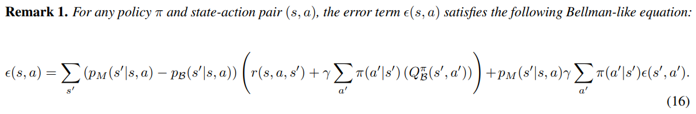
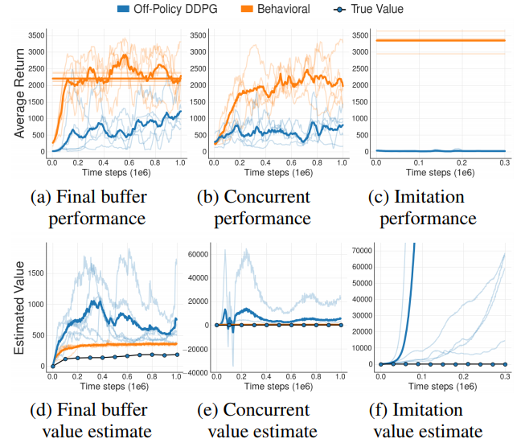
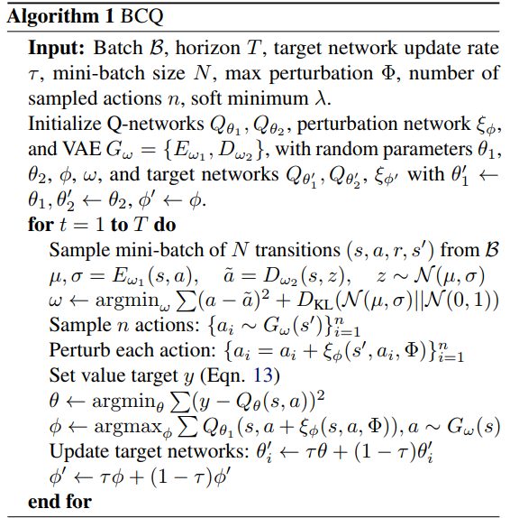
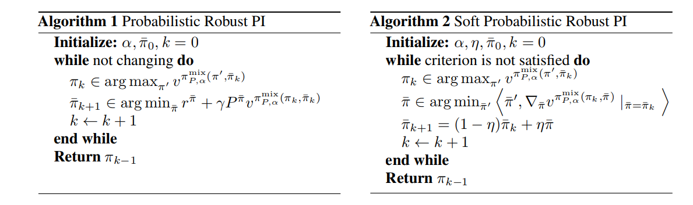
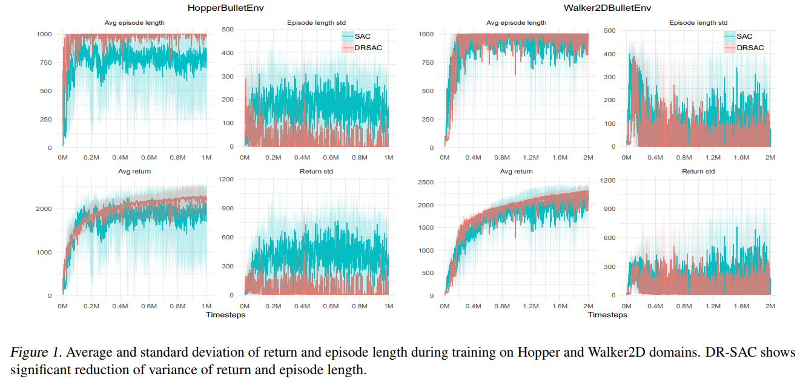

ICML-2019 accepted paper list已经放出来一个月了，知乎上有关ICML-2019的问题下还一片火热，让周末摸鱼的我感受到了强烈的peer pressure，开始后知地后觉滚去公司刷paper
扫了一眼accepted list，感觉今年很多文章都很有趣，值得深入研究一下
Machine learning
Reinforcement learning
Off-Policy Deep Reinforcement Learning without Exploration
问题背景和之前看过的[Tencent AILab 那篇 imitation learning]的文章基本一致：你有一批固定的数据，可以用这一堆数据去进行off-policy的学习，但是训练过程中不允许有更多的exploration，也不允许收集更多的数据
这种场景在定价系统或推荐系统中较为常见，前者explore的代价太大，一不小心explore到很糟糕的地方就血本无归；而在大部分做推荐搜索的公司内部，万恶的PM是绝对不会允许你拿用户做实验的，万一一个explore不好就流失了一个用户；因此这类场合下的RL往往是先收集一波数据，然后拿这批固定的数据做off-policy的训练，这样在训练期线上只需跑一个安全且保守的策略即可
作者首先提出了一个很惊人的结论——在以上问题设定的大背景下，由于 extrapolation error 的存在，一些传统的RL算法，包括DQN、DDPG等，是不会收敛的
In this paper, we demonstrate that due to errors introduced by extrapolation, standard off-policy deep reinforcement learning algorithms, such as DQN and DDPG, are incapable of learning with data uncorrelated to the distribution under the current policy, making them ineffective for this fixed batch setting.
根本原因在于，如此设定下的off-policy RL优化的MDP实际上是batch data中的数据所代表的MDP，而不是真实环境的MDP，这其中会产生一个不能被bound的误差
对于state s和acton a，我们首先定义这个误差函数 $\epsilon(s,a)$ 为off-policy收集到的数据数据所代表的MDP与真实环境MDP之间的误差，而 $\epsilon$ 在state和action下的积分为extrapolation error：
把两个Q function用Bellman equation展开，可以发现$\epsilon(s,a)$也可以写成类似Bellman equation的递推式形式：

以加号为界将两部分分隔开，这个递推式由两部分组成，左边这部分的核心是 $p_{M}(s’|s,a)-p_{\mathcal{B}}(s’|s,a)$，可以理解为MDP的model bias，右半部分是一个Bellman operator。已知Bellman operator一定是contraction mapping，那么问题就在于前半部分的model bias是不是可以被bound
文章指出至少有三种情况下，这个model bias可以是非常大的，这里用自己的语言总结一下
- Model bias: batch size比较小，那么batch中的数据对真实MDP的表达方差会非常大，实际上相当于在学一个non-stationary的MDP
- Absent data: 这点在连续state-action space的MDP中比较常见，连续空间中，用神经网络拟合从 $\mathcal{S}\times\mathcal{A}\rightarrow\mathbb{R}$ 本质是用数据中已有的state和action学习到整个state-action space空间的插值，那么对于某个特定的state，如果target policy访问到这个state的概率很高，但由behavior policy收集到的数据中恰好缺少接近这个state的样本，那么对于这个state的value estimation error就会任意大
- Training mismatch: 即使数据量足够，由于从dataset中的采样是均匀的，如果behavior policy收集到的数据分布和target policy对应的数据分布不一样，那么误差也可以很大（这是不是反过来又证明了TRPO/PPO类算法的先进性？）
作者在实验中对比了三种场景的off-policy训练
- Final buffer: 从零开始训练一个DDPG，将这个DDPG从开始训练到收敛所有用到的样本收集起来训练off-policy DDPG
- Concurrent: 训练一个DDPG，将其训练数据同时feed给另一个完全异步同时启动的off-policy DDPG
- Imitation: 拿一个已经训练好的DDPG来跑expert demonstration给off-policy DDPG来训练
实验结果发现1和2的off-policy DDPG比普通DDPG差很多，3则完全不收敛，且value出现了爆炸现象
这个value爆炸的现象，我做实验也遇到过，当时以为是哪里写错把policy loss的梯度传到Q-function里面了，后来分析了一下，其实是因为DDPG训练的loss是一个正反馈系统，如果有某些访问概率很大的state的value估计很差的话，这个误差会随着Bellman递推越来越大。虽然提高起来蛮不可思议，但确实即使没有gradient指导，value也会出现爆炸的现象

作者提出的解决方案是，对于上面的递推式，只要保证MDP是deterministic的，即可使得左半部分的model bias为0，作者还证明了对于任意state-action pair， $e_{MDP}=0$ 的充要条件是model-bias为0
deterministic MDP其实是个很强的条件，绝大多数RL问题都不满足，因此作者假设对于任意state-action pair，它与batch data中的数据相似度可以用一个conditional marginal likelihood $p_{\mathcal{B}}(a|s)$ 学出来。实际作者是用VAE来学的，这样就可以直接从这个分布中采样，采样后在所有action中选择value最大的那个action作为Q value的估计即可。可以想到随着训练迭代，VAE采样出的数据分布会asymptotically follow真实MDP的数据分布
这里还需要check作者前作 Clipped Double Q learning，还是有点复杂的

Actor-Attention-Critic for Multi-Agent Reinforcement Learning
见Multi-Agent问题汇总Actor-Attention-Critic
Open-ended Learning in Symmetric Zero-sum Games
见Multi-Agent问题汇总#Actor-Attention-Critic
Action Robust Reinforcement Learning and Applications in Continuous Control
如题，本文研究的是连续空间中的robust RL控制问题
在此之前，虽然已经有大量文献对robust MDP问题进行了充分的研究，但他们分析的场景的大多都是tabular case或者linear function approximator，这些研究结果很难拓展到非线性的连续state-action space中；2017年Pinto等人发表于ICML2017的文章中，作者曾提出了一种基于对抗博弈优化RL模型robustness的方法，该方法得到了很好的实验结果，但其背后缺乏理论保障
本文中作者研究的主要是对于action空间的鲁棒性，文章以minimax对抗博弈作为基础，设定了两种博弈情况
- 模型预测得到的action与实际执行的action不同，有一个adversary试图通过修改实际执行的action来让agent拿到尽可能低的reward，即 $a=\delta a^{+}+(1-\delta)a^{-}$，这种设定叫做NR-MDP
- 存在$\alpha$的概率使得模型与环境交互的时候，实际执行的是另一个完全不同的动作；否则执行模型的输出，这种设定叫做PR-MDP
针对两种设定，本文在Bellman equation的层面上提出了统一的minimax鲁棒训练解决方案，算法分两步
- 给定一个adversarial strategy，计算optimal counter strategy
- 基于当前的value做一步Bellman propagation
文章还指出非soft的收敛速度会比non-soft得快，但soft面对错误更robust

实验中作者采用的是类似DDPG的形式
- PR-MDP: $\pi^{mix}(u|s;\theta,\bar{\theta})=(1-\alpha)(u-\mu_{\theta}(s))+\alpha(u-\bar{\mu_{\theta}}(s))$
- NR_MDP: $\pi^{mix}(u|s;\theta,\bar{\theta})=u-[(1-\alpha)\mu_{\theta}(s)+\alpha\bar{\mu_{\theta}}(s)]$
Distributionally Robust Reinforcement Learning
本文出自今年ICML-2019的workshop RL4RealLife，主要解决的问题是agent探索过程中的safety问题，作者在MDP的层面提出了一种新的Bellman operator，并证明了该operator
- is a valid Bellman operator, i.e., a monotone $\ell_{\infty}$-norm $\gamma$ contraction on value functions
- has polynomial convergence rate intead of exponential
- is distributionally robust, i.e., has safety guarantee
从intuition的层面来讲，本文的核心思想是这样的：做policy iteration时，对于当前agent的policy $\pi$，如果我们希望$\pi$在explore的时候可以避免探索可能会带来非常差value的state，我们需要使用一个在能够带来最差value的adversarial policy $\tilde{\pi}$来做policy evaluation，即估计value的值；同时在policy improving时让$\pi$沿着用$\tilde{\pi}$估计出的value的greedy方向前进
如何定义这个adversarial policy $\tilde{\pi}$呢？我们可以定义它在一个以$\pi$为球心的$\epsilon$-ball中；距离定义的话文中用的是KL divergence（KL作为metric不满足对称性，它的Hessian倒是可以作为一个合法的Riemannian metric tensor，不过本文中并没有严格地追求这一点上的严谨）
比较容易想到的一个问题在于，这种用worst case adversarial policy来做policy evaluation的思路会导致agent在短期内采取很保守的探索策略，每步都这样explore的话势必会影响收敛速度，因此作者又提出这种方法可以和SAC结合，因为SAC的设定中每步都是包含有entropy正则的，模型可以自己去学习长期的exploration entropy取舍问题
本文实验部分对比的主要baseline算法是SAC，实验环境为PyBullet（原RobotSchool环境，免费下载使用，不像MuJoCo需要licence），Figure 1中可以看到，虽然在average return指标上作者提出的方法对比SAC提升不是很显著，但从降低方差的层面来说，DRSAC提升现还是比较明显的

由于本文是OpenReview公开审稿，审稿人#2给了一些建设性的意见：在更多的环境下做实验，也可以分析简单实验环境下agent的行为特点，这两点经验非常值得学习
On the Generalization Gap in Reparameterizable Reinforcement Learning
To the best of my knowledge, this is the first paper comprehensively discussing and analyzing the generalization issues of reinforcement learning from a theoretic approach.
作者指出，要对on-policy RL做具体的理论分析有两个方面的难点
- 第一，训练过程中episode的distribution一直在随policy的变化而变化，这为finite sample analysis带来了难度
- 第二，当前的RL研究普遍混淆了两种不同意义的generalization，作者称这两种generalization gap实际上是有本质区别的
- 由训练环境本身带来的randomness，例如很多RL模型无法在不同的random seed下得到consistent performance，对于这种generalization gap作者称之为intrinsic error，与supervised learning中的generalization意义是类似的
- 由于环境变化所带来的distribution shift，例如RARL中在默认MuJoCo环境下训练模型，在不同的relative mass下测试模型性能，得到模型缺乏鲁棒性的结论，作者将这种generalization gap称为external error，并认为这种error比较类似于transfer learning中的误差